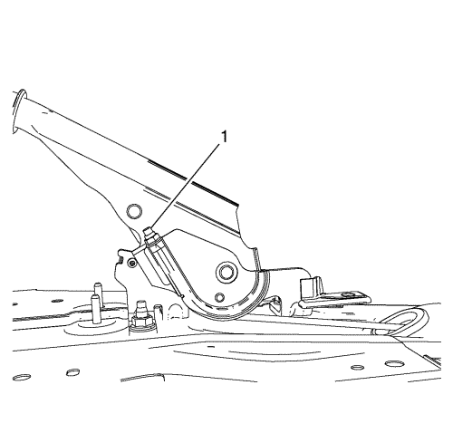
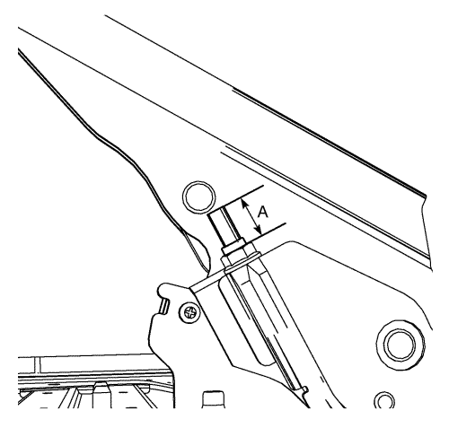

Advertencia : Consulte Advertencia relacionada con el polvo procedente de los frenos en la sección Prólogo
Nota: Cuando vaya a apretar o aflojar la tuerca de ajuste, utilice SÓLO HERRAMIENTAS DE MANO.
- Aplique y suelte completamente la palanca del freno de mano varias veces. Compruebe que la palanca del freno de mano se libere completamente.
- Gire el interruptor de encendido a ON. Verifique que no está iluminada la lámpara roja de advertencia de FRENO.
- Si la lámpara roja de advertencia de FRENO está iluminada, compruebe lo siguiente:
| • | La palanca del freno de mano esté en la posición de freno completamente suelto, y contra el tope. |
| • | Los cables del freno de mano no están flojos. |
- Si la lámpara roja de advertencia de FRENO sigue iluminada y no hay otras causas visibles, consulte Síntomas - Frenos hidráulicos .
- Apague el encendido.
- Suelte el guardapolvo de la palanca del freno de mano, de la consola de piso, apretando suavemente hacia dentro los costados del retenedor del guardapolvo, y tire del guardapolvo hacia atrás.

- Con la palanca del freno de mano en la posición de freno suelto, afloje la tuerca de ajuste (1) lo suficiente para liberar completamente la tensión del cable delantero.
Atención: Consulte Precauciones a tomar para levantar el vehículo con una grúa o un gato en la sección Prólogo
- Elevar el vehículo y soportarlo de manera segura. Levante el vehículo lo suficiente para permitir el desmontaje del conjunto de neumático y rueda, y el ajuste del tambor trasero.
- Desmontar las ruedas traseras del vehículo. Consultar Desmontaje y montaje de la rueda y el neumático .
- Ajuste los frenos de tambor traseros. Consultar Ajuste de freno de tambor .
- Asegúrese de que no haya ningún arrastre en la zapata de freno después de realizar el ajuste, girando los tambores de freno. Si hay algún arrastre, vuelva a encentrar las zapatas de freno y realice nuevamente el ajuste de las zapatas de freno.
- Suba la palanca del freno de mano 6 posiciones de retención.
Atención: Consulte Precaución con las fijaciones en la sección Prólogo

- Apriete la tuerca de ajuste del cable del freno de mano (1) hasta que el extremo de la varilla de ajuste (A) sobresalga 21 mm de la tuerca de ajuste.
- Intente girar los tambores de freno traseros No debería haber rotación hacia delante o hacia atrás.
- Suelte completamente la palanca del freno de mano.
- Compruebe que el freno de mano esté suelto, girando los tambores de freno traseros. Los tambores deben girar libremente y no debe haber ningún arrastre de las zapatas de freno.
- Si los tambores no giran libremente, repita el procedimiento de ajuste del cable del freno de mano.
- Suba la palanca del freno de mano 3 posiciones de retención, e intente girar los tambores de freno traseros:
| • | Uno de los tambores de freno no debe girar hacia adelante ni hacia atrás. |
| • | El otro tambor de freno debe girar hacia adelante o hacia atrás, o debe necesitar un esfuerzo considerable para girar. |
- Suba la palanca del freno de mano una posición de retención adicional, e intente girar los tambores de freno traseros.
- Compruebe que ni el tambor izquierdo ni el derecho puedan girar.
- Instalar la llanta trasera y los conjuntos de rueda. Consultar Desmontaje y montaje de la rueda y el neumático .
- Bajar el vehículo.
- Coloque el guardapolvo de la palanca del freno de mano en la consola de piso y empújelo hacia abajo, para que encaje en su sitio.
- Suelte la palanca del freno de mano.